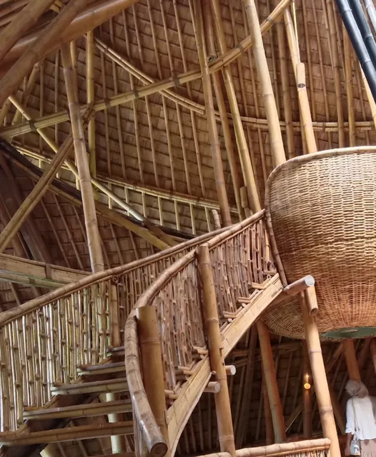
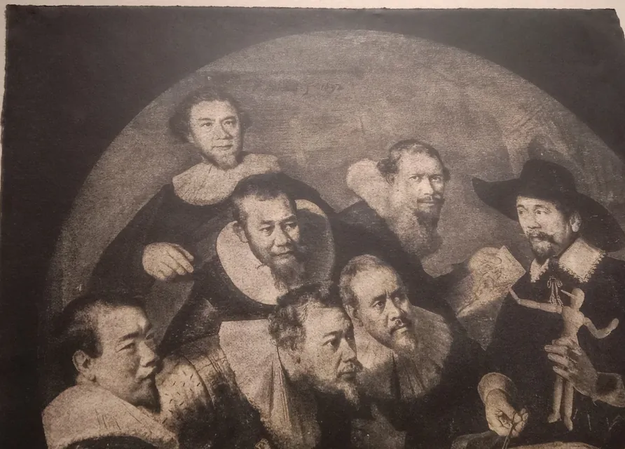
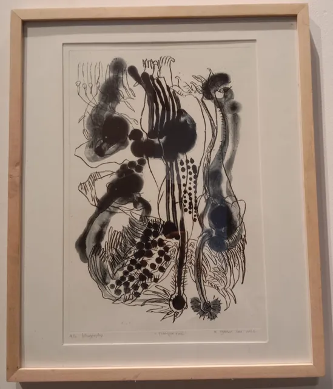

Cerita lengkap
Halo, aku Rafi
Dari anak yang banyak tanya, ke mahasiswa desain yang menjelaskan pakai data.
Anak pertama sekaligus cucu pertama dari Purwokerto, sekarang belajar Desain Interior di ISI Yogyakarta. Di halaman ini aku menulis cerita lengkapku. Yang manis, yang berat, dan yang membuatku tetap jalan.


Selalu bertanya kenapa
Namaku Musholi Rafi, biasa dipanggil Rafi. Aku lahir tahun 2007, asli Purwokerto, dan sekarang merantau di Yogyakarta. Ketertarikanku pada dunia visual sudah muncul sejak umur 10 tahun.
Di SMA aku makin tertarik pada pertanyaan daripada jawaban. Kenapa kereta bisa tepat waktu di satu negara tapi tidak di negara lain. Kenapa harga naik saat barangnya langka. Kenapa orang bisa yakin pada sesuatu tanpa data. Kebiasaan itu membuatku suka logika, sains dasar, dan diskusi yang masuk akal. Aku tidak selalu paling pintar di kelas, tapi aku hampir selalu yang paling banyak bertanya.
Perjalanan
Perjalananku dari tahun ke tahun
Sebagian besar cerita di bawah aku ambil dari jurnal yang rutin kutulis sejak Agustus 2025. Yang berat tetap kutulis, secukupnya.
-
2007 sampai 2021Purwokerto
Cucu pertama yang suka bangunan
Aku lahir di Purwokerto dan tumbuh sebagai anak pertama sekaligus cucu pertama di keluarga besarku. Aku dibesarkan oleh ayah dan ibu, juga oleh eyang dan aung, begitu aku memanggil kakek nenekku, bersama tiga adikku.
Namaku punya cerita. Nama Musholi diberikan eyang, dari bahasa Arab, untuk orang yang suka mempelajari Islam. Nama Rafi diberikan ibu dan disetujui ayah, artinya menjunjung tinggi. Keluargaku berharap aku bisa mengubah hal-hal yang belum sempat mereka ubah.
Sejak kecil aku suka bangunan, entah yang kubangun di game atau yang kugambar di kertas. Dari situ ketertarikanku pada dunia visual pelan-pelan tumbuh.
-
2022 sampai 2025SMA 1 Purwokerto
Koridor kayu, lampion merah, dan gambar pertama
Di kelas 10 aku sempat kesulitan beradaptasi. Untungnya aku tumbuh di lingkungan yang hangat, toleran, dan penuh semangat. Di kelas yang sama ternyata ada sepupuku sendiri, yang sampai sekarang jadi teman cerita terbaikku.
Di SMA aku mulai tertarik menggambar. Aku pernah belajar menggambar sebulan penuh, dan hasilnya membuatku kaget sendiri. Gambar rumah di kelas 1 SMA jadi gambar pertama yang menurutku benar-benar bagus.
Aku bukan anak organisasi dan lebih suka menyendiri. Teman-temanku sering bilang aku harus lebih berani mencoba. Kata-kata itu masih kubawa sampai sekarang.

Koridor kayu SMA 1 Purwokerto 
Pulang waktu maghrib, pas hujan 
Gambar rumah pertamaku -
Awal 2025Musim ujian masuk
Malam-malam belajar dan matahari yang tersenyum
Menjelang ujian masuk kuliah aku belajar sampai larut malam, dan aung sering menemaniku. Di salah satu malam itu aku menggambar matahari yang tersenyum di atas banyak orang, lalu memajangnya di meja belajar. Satu orang di depan itu aku, yang harus membanggakan semua orang yang kusayang.
Hasilnya tidak sesuai harapan. Aku gagal di jalur siswa eligible. Saat ujian tulis aku sempat sakit, dan aku juga gagal masuk PTN impianku. Rasanya seperti dunia runtuh. Aku merasa bersalah dan merasa tidak cukup baik.
Aku tetap mencoba. Aku ikut ujian lagi dan lagi, sampai akhirnya diterima di Desain Interior ISI Yogyakarta. Di titik terendah itu aku menemukan video Zahid Azmi Ibrahim dan Ali Abdaal, lalu pelan-pelan menata ulang hidupku.
Kegagalan bukan akhir. Kegagalan adalah data untuk perbaikan.
Kupajang di meja belajar -
Juli 2025Berangkat ke Yogyakarta
Kereta pertamaku dan kampus seni
Bersama ayah aku berangkat ke Yogyakarta. Seperti biasa aku menyiapkan semuanya di catatan, dari peta, kuota internet, barang kecil seperti sabun dan payung, sampai jam kereta pulang. Perjalanan itu kucatat sebagai keberangkatan kereta pertamaku.
Aku memang suka kereta, dari sistemnya, sejarahnya, mesinnya, sampai jenis-jenisnya. Sebelum kuliah dimulai, aku juga pertama kali datang ke Fakultas Seni Rupa dan Desain ISI Yogyakarta, kampus yang sekarang jadi tempatku belajar setiap hari.
Pertama kali ke FSRD ISI 
Aku suka kereta -
Agustus 2025Mulai menulis jurnal
Hari kemenangan kecil dan malam pertama di kost
Satu pagi di awal Agustus aku malas sekali, dan rencana yang kususun semalam jadi berantakan. Lalu aku menonton video Ali Abdaal, membuka laptop, dan mulai menulis pertanyaan untuk diriku sendiri tentang kenapa aku seperti ini. Aku jawab satu per satu. Tanpa sadar itu jadi jurnal pertamaku, dan hari itu kusebut hari kemenanganku.
Beberapa hari kemudian aku menulis jurnal di perpustakaan. Aku senang berada di antara orang-orang yang sedang membaca dan bekerja, seperti ikut jadi bagian dari komunitas mereka.
Pertengahan Agustus aku mulai ngekost di Yogyakarta. Malam pertama terasa sepi walaupun ayah masih menemani. Biasanya jam segitu aku sedang berkumpul dengan keluarga, bermain dengan adik-adikku, atau menonton Doraemon bersama. Dari seorang teman aku menyimpan satu pesan. Gagal di awal perjalanan itu wajar, jadikan kegagalan sebagai guru terbaik.

Buku Ali Abdaal, lengkap dengan tanda tangannya -
Semester 1Agustus sampai Desember 2025
Kaget di kampus seni
Ekspektasiku tinggi. Aku membayangkan kampus yang penuh diskusi intelektual. Kenyataannya aku kaget budaya. Lingkungannya jauh lebih cair dari SMA-ku, dan gaya hidup di sekitarku berbeda dengan nilai yang kupegang. Aku sempat merasa salah tempat.
Tugas praktiknya juga berat buatku. Nirmana, gambar bentuk, dan gambar teknik manual. Satu nirmana bisa butuh beberapa kali asistensi sebelum di-ACC, cat posternya tidak murah, dan beberapa nilai praktikku C. Aku justru jauh lebih menikmati mata kuliah teori seperti sejarah desain dan sejarah seni.
Uang saku harus kuatur ketat. Aku membuka toko kecil di Lynk untuk catatan kuliahku. Awalnya tidak ada yang membeli. Aku tetap merapikan catatan, dan dari situ pelan-pelan lahir Catatan Kuliah D.I.
Menjelang ujian akhir aku sempat burnout. Tapi ada juga hari yang membuatku bersyukur, misalnya saat mengerjakan tugas bersama kelompokku di rumah makan kecil dekat kampus. Aku sadar setiap orang punya kelebihannya sendiri.
Lama-lama aku juga sadar, teman-temanku berangkat dari rasa dan intuisi, sedangkan aku selalu ingin tahu alasan di balik setiap garis. Dua cara itu tidak saling melawan. Justru saling melengkapi.
Rasa membuat desain hidup. Data membuatnya bisa dipertanggungjawabkan.
-
Semester 2Februari sampai Juni 2026
Hampir pindah jurusan, lalu proyek rumah tinggal
Di semester dua performaku turun. Aku sempat berpikir untuk pindah jurusan, karena dulu aku bercita-cita jadi arsitek dan lebih suka bangunan dari luar. Akhirnya aku memutuskan bertahan dan melihat sejauh apa aku bisa berkembang di sini.
Tugas terbesarnya adalah proyek residensial. Layout, potongan, rencana plafon, gambar kerja, sampai perspektif final. Aku belum bisa AutoCAD saat memulainya, tapi proyeknya selesai. Hasilnya bisa kamu lihat di bagian karya.
Di tugas kelompok aku belajar maju duluan. Saat video tugas kelompok belum ada yang mengedit, aku yang mengerjakannya.
Aku juga punya fase yang tidak kubanggakan. Aku kebanyakan main game, tidur larut, dan jadwalku berantakan. Semuanya kutulis apa adanya di jurnal, lalu pelan-pelan kubenahi.
Liburan semester aku pulang naik kereta Logawa dan menulis jurnal di dalamnya. Isinya rasa syukur, untuk teman-teman yang selalu membantuku dan untuk hidup yang sedang kujalani. Di rumah aku membelikan nasi goreng favoritku untuk adikku yang sedang belajar keras untuk ujiannya.
-
April 2026Pertama kali ke Bali
Bali, tempat aku paling banyak bertanya
Di tengah semester dua aku menginjakkan kaki di Bali untuk pertama kalinya. Salah satu tempat yang kukunjungi adalah ISI Bali, Institut Seni Indonesia Bali. Bangunannya besar-besar dan aku langsung terkesan, sampai membandingkannya dengan ISI Yogyakarta. Tapi aku tetap ingat, setiap kampus pasti punya kelebihan dan kekurangannya sendiri.
Ini pengalaman terbesarku di luar Jawa. Aku menjelajah arsitektur Bali, yang tradisional dan yang modern, dan jumlahnya banyak sekali. Jujur, di sinilah aku paling banyak bertanya. Setiap jawaban membuatku berkata, oh ternyata begini. Dari situ aku jadi tahu apa yang membedakan arsitektur Bali dan arsitektur Jawa. Arsitektur Bali punya elemen yang tidak dimiliki arsitektur Jawa, dan elemen itu mahal karena jumlahnya terbatas.
Aku juga suka fotografi, dan hasil foto di perjalanan ini lumayan juga. Favoritku adalah kursi gantung di tepi kolam, di sebuah tempat yang namanya sudah aku lupa.

ISI Bali, bangunannya besar-besar 
Arsitektur bambu di tengah hutan 
Tangga bambu dan keranjang anyaman besar 
Foto favoritku, kursi gantung Di sana aku juga melihat banyak karya seni. Aku menyukai dan menghargai karya seni, tapi ada karya yang terlihat sederhana dengan harga yang mahal sekali, sampai aku bertanya-tanya maksudnya. Salah satu yang paling kuingat adalah karya yang mengolah ulang lukisan terkenal The Anatomy Lesson of Dr. Nicolaes Tulp karya Rembrandt, yang dilukis tahun 1632. Ternyata yang membuat sebuah lukisan mahal adalah cerita dan makna di baliknya. Ceritanya bisa membuat orang yang mendengarnya gemetar.
Menjelang senja aku berjalan di area seni dan teknologi, di jalan dengan lampu-lampu gantung. Lalu ada patung ikonik yang menghubungkan seni dan teknologi. Luar biasa.

Mengolah ulang lukisan Rembrandt 
Transformation, litografi karya Ni Nyoman Sani (2023) 
Jalan berlampu di area seni dan teknologi 
Patung yang menghubungkan seni dan teknologi Satu pagi yang paling kuingat, sekitar jam 5 di Hotel Grand Zuri. Aku membuka laptop, membaca buku, lalu mengerjakan apa yang harus dikerjakan.

Jam 5 pagi di Hotel Grand Zuri Nilai sebuah karya ada pada cerita dan makna di baliknya.
-
Semester 3Agustus 2026 sampai sekarang
Belajar mengatur uang, keinginan, dan arah
Awal semester tiga aku sadar aku terlalu banyak maunya. Meja baru, kursi, monitor, tablet. Semuanya terasa penting setelah terlalu lama melihat iklan. Aku menulis daftarnya, lalu memilahnya dengan satu prinsip. Pentingkan yang penting saja. Keinginan itu kusimpan dulu, HP kututup, dan buku kubuka lagi.
Aku juga mulai belajar ekonomi dasar, karena sebelumnya aku belum pernah benar-benar mengelola uang dengan baik.
Sekarang aku masih belajar berdamai dengan jurusanku. Dulu aku suka bangunan dari luar, sekarang aku belajar bagian dalamnya. Sambil itu aku menulis, menyusun modul, membangun ruang diskusi di Discord, dan membuat website yang sedang kamu baca ini.
 Lahirnya Catatan Kuliah D.I.
Lahirnya Catatan Kuliah D.I.
Dari toko kecil yang awalnya sepi itu lahir Catatan Kuliah D.I. Awalnya sederhana, aku merapikan catatan kuliah untuk menambah biaya tugas. Lama-lama tujuannya berubah jadi misi, yaitu membantu mahasiswa yang merasa tersesat supaya bisa belajar lebih efisien. Sampai sekarang catatan kuliahku sudah membantu lebih dari 100 mahasiswa belajar dengan lebih mudah.
Menemukan posisiku
Aku ingin menjadi teman belajar yang membantu mahasiswa desain menjelaskan karyanya dengan data, tanpa membuang rasa. Ergonomi, metodologi penelitian, dan metodologi desain menjadi alat utamaku. Belakangan aku juga belajar memakai AI sebagai teman diskusi, tanpa menyerahkan cara berpikirku padanya.
Saat asistensi, dosen hampir selalu bertanya kenapa, dan di situlah data membantu kita menjawab dengan tenang. Gambar kerja proyek rumah tinggalku bisa kamu lihat di sini.
Kenapa website ini ada
Sebelumnya aku menjual modul lewat platform orang lain, dan catatanku tersebar di mana-mana. Website ini adalah rumah untuk semuanya. Prinsipnya sederhana.
- Berikan manfaat dulu. Sebagian besar catatan di sini gratis. Ada catatan belajar efektif, belajar AI, mengatur uang, dan mengatur waktu.
- Jujur soal kemampuan. Aku masih mahasiswa dan penulis pemula. Bukuku belum terbit di penerbit besar. Aku tidak akan memalsukan testimoni atau angka pembeli.
- Dukung kalau terbantu. Kalau ada yang bermanfaat, kamu bisa membeli modul, ikut bimbel di Discord, atau sekadar berlangganan newsletter.
Yang kupelajari sejauh ini
Banyak di antaranya datang dari teman dan sepupuku, lalu kutulis ulang di jurnal sampai benar-benar kupahami.
- Konsisten lebih penting dari semangat hari pertama.Aku sering menyala di hari pertama lalu padam di hari ketiga. Ini masih jadi PR terbesarku.
- Berani mencoba itu cara menambah jam terbang.Belajar dari video saja tidak cukup. Harus dipraktikkan.
- Kerja keras perlu ditemani kerja cerdas.Yang dicari bukan hanya orang yang lelah bekerja, tapi orang yang tahu cara bekerja.
- Rasa malas tidak perlu dimusuhi.Cukup disapa, lalu disuruh minggir sebentar karena aku sedang sibuk.
- Pentingkan yang penting saja.Bedakan kebutuhan dan keinginan sebelum mengeluarkan uang.
- Jadilah unik, meskipun bukan yang terbaik.Di mata keluarga, aku tetap yang terbaik versi mereka.
- Orang baik adalah orang yang bermanfaat.Pelan-pelan aku ingin keberadaanku berguna untuk keluarga, teman, dan lingkunganku.
Yang membentuk caraku berpikir
Keluargaku. Ayah dan ibu yang selalu mendukung aku belajar apa saja, eyang dan aung yang selalu mendoakan, dan tiga adikku yang mengajariku hal-hal yang tidak bisa kupelajari di sekolah maupun kampus. Teman-teman yang menjadi tempat diskusi, termasuk seorang teman yang mengajariku public speaking. Dan kanal YouTube Zahid Azmi Ibrahim dan Ali Abdaal yang menemaniku di titik terendah dan membuatku percaya bahwa belajar bisa dibuat sistematis dan menyenangkan. Website ini juga terinspirasi dari cara Ali berbagi ilmu.
Untuk dosen-dosen terbaik di Desain Interior ISI Yogyakarta, terima kasih. Banyak cara berpikir di website ini lahir dari kelas, asistensi, dan koreksi kalian.
Mimpiku
Aku melihat minat baca dan daya nalar generasi kita masih perlu ditingkatkan. Aku tidak ingin menjadi desainer yang hanya bisa menggambar. Aku ingin menjadi desainer yang bisa berpikir.
Cita-cita jangka panjangku adalah menjadi pendidik, entah dosen atau guru, dan suatu hari profesor. Bukan karena gelarnya. Aku ingin mendiskusikan ide-ide besar dan melihat orang lain bertumbuh. Aku juga khawatir melihat teknologi sering dipakai untuk menghindari berpikir. AI bisa membuat kita lebih pintar, atau justru lebih malas. Aku ingin ikut memastikan generasi kita memilih yang pertama.
Ada juga mimpi yang lebih pribadi. Aku ingin lancar berbahasa Inggris dan Jepang, suatu hari pergi ke Jepang untuk melihat bagaimana kota dan sistemnya dibangun, dan membuat keluargaku bangga.
Langkah kecilnya dimulai dari sekarang. Menulis, mengajar teman lewat Discord, dan terus belajar hal-hal yang membuatku penasaran. Neurosains, sustainability dan eco green design, transportasi, ekonomi, AI, sampai membuat website seperti yang sedang kamu baca ini. Newsletter-ku di Substack adalah laboratorium digitalku. Setiap minggu aku mengirim esai pendek tentang sistem produktivitas, sejarah desain, dan refleksi sebagai mahasiswa.
Fakta singkat
- Umur. Lahir tahun 2007, Gen Z.
- Domisili. Asli Purwokerto, sekarang merantau di Yogyakarta.
- Catatan kuliah. Sudah membantu lebih dari 100 mahasiswa belajar dengan lebih mudah.
- Bacaan. 3 sampai 5 buku nonfiksi setahun. Sekarang sedang mendalami buku tentang kepemimpinan.
- Kereta. Aku suka sistem, sejarah, dan mesin kereta.
- Makanan. Nasi goreng favoritku. Aku lebih suka rasa asin gurih daripada yang terlalu manis.
- Lagu. Niji dari Masaki Suda sudah lama jadi lagu favoritku.
- Sisi lain. Suka mencoba hal baru seperti lari pagi dan makan sehat. Anehnya, aku tidak terlalu suka kopi pahit.
Mau ngobrol atau belajar bareng. Mulai dari catatan gratis, gabung newsletter, atau lihat program bimbel di Discord.